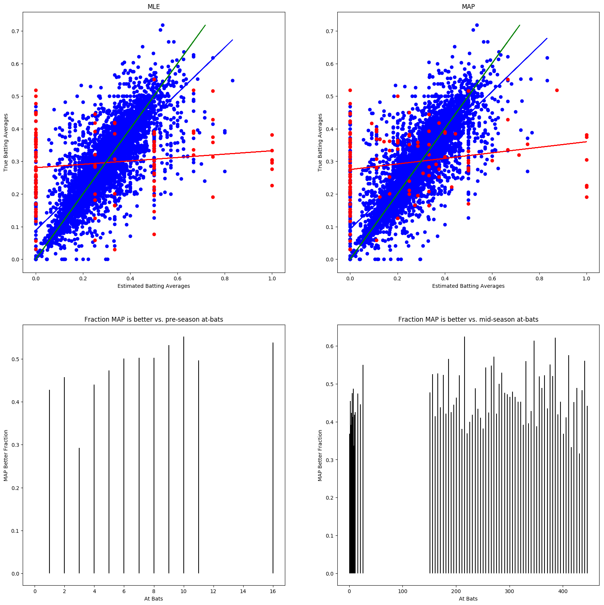

Homework 1
MLE, MAP estimates; Linear and Logistic Regression
CMU 10-701: Machine Learning (Spring 2017)
OUT: Jan 31
DUE: Feb 10, 11:59 PM
NAME: Mengwen He
ADREW ID: mengwenh
For each case listed below, what type of machine learning problem does it belong to?
Advertisement selection system, which can predict the probability whether a customer will click on an ad or not based on the search history.
Answer:
A task, with ads click statistics and search history as input data, outputs the prediction of continuous probability of clicking an ad.
U.S post offices use a system to automatically recognize handwriting on the envelope.
Answer:
A task, with handwriting samples and their labels as input data, outputs the prediction of discrete numbers/letters of a handwriting on the envelope.
Reduce dimensionality using principal components analysis (PCA).
Answer:
A task, without training data as input, outputs a description of reduced dimensionality.
Trading companies try to predict future stock market based on current market conditions.
Answer:
A task, with current market conditions as input, outputs the prediction of discrete stock market conditions, say bull or bear market.
A task, with current market conditions as input, outputs the prediction of continuous stock market conditions, say stock price.
Repair a digital image that has been partially damaged.
Answer:
A task, with digital images database as input, outputs the prediction of discrete pixel value in the damaged zone.
A task, with digital images database as input, outputs the prediction of continuous parameters of a color distribution model to form a discrete patch to cover the damaged zone.
A task, without training data as input, outputs a description of a damaged pixel according to its surrounding pixel values, e.g. interpolation or extrapolation.
Type of machine learning problem:
Supervised learning: Classification
Supervised learning: Regression
Unsupervised learning
For four statements below, which one is wrong?
In maximum a posterior (MAP) estimate, data overwhelms the prior if we have enough data.
There are no parameters in non-parametirc models.
\(P(X \cap Y \cap Z)=P(Z|X \cap Y) P(Y|X) P(X)\).
Compared with parametric models, non-parameter models are flexible, since they don’t make strong assumptions.
Answer: is wrong.
Non-parametric model still needs parameters to describe the model, but the number of model’s parameters is not fixed and will grow with the data size. The non-parametric only means that there is weak assumption on the model’s type defined by a fixed number of parameters.
There are about \(12\%\) people in U.S. having breast cancer during their lifetime. One patient has a positive result for the medical test. Suppose the sensitivity of this test is \(90\%\), meaning the test will be positive with probability \(0.9\) if one really has cancer. The false positive is likely to be \(2\%\). Then what is the probability this patient actually having cancer based on Bayes Theorem?
A. \(90\%\) B. \(86\%\) C. \(12\%\) D. \(43\%\)
Answer:
\(P(C=1)=0.12\)
\(P(T=1|C=1)=0.90\)
\(P(T=1|C=0)=0.02\)
\[\nonumber \begin{array}{rcl} P(C=1|T=1) & = & \frac{P(T=1|C=1)P(C=1)}{P(T=1|C=1)P(C=1)+P(T=1|C=0)P(C=0)} \\ & = & \frac{0.90\times0.12}{0.90\times0.12+0.02\times0.88} \\ & = & 0.86 \end{array}\]
What is the most suitable error function for gradient descent using logistic regression?
The negative log-likelihood function
The number of mistakes
The squared error
The log-likelihood function
Answer:
The negative log-likelihood function of a logistic regression is a convex function.
Consider a \(p\)-dimensional vector \(\vec{x}\in\mathbb{R}^p\) drawn from a Gaussian distribution with an identity covariance matrix \(\Sigma=I_p\) and an unknown mean \(\vec{\mu}\), i.e. \(\vec{x}\sim\mathcal{N}(\vec{\mu},I_p)\). Our goal is to evaluate the effectiveness of an estimator \(\hat{\vec{\mu}}=f(\vec{x})\) of the mean from only a single sample (i.e. \(n=1\)) by measuring its mean squared error \(\mathbb{E}[||\hat{\vec{\mu}}-\vec{\mu}||^2]\), where \(||\cdot||^2\) is the squared Euclidean norm and the expectation is taken over the data generating distribution.
Note that for any estimator \(\hat{\vec{\theta}}\) of a parameter vector \(\vec{\theta}\), its mean squared error can be decomposed as: \[\mathbb{E}[||\hat{\vec{\theta}}-\vec{\theta}||^2] = ||Bias[\hat{\vec{\theta}}]||^2 + trace(Var[\hat{\vec{\theta}}])\] where, \[Bias[\hat{\vec{\theta}}] = \mathbb{E}[\hat{\vec{\theta}}] - \vec{\theta}~and~Var[\hat{\vec{\theta}}]_{i,i}=Var[\hat{\theta}_i]=\mathbb{E}[(\hat{\theta}_i-\mathbb{E}[\hat{\theta}_j])^2]\]
Derive the maximum likelihood estimator: \[\hat{\vec{\mu}}_{MLE}=\arg\max_{\vec{\mu}} P(\vec{x}|\vec{\mu})\]
Answer:
\(\because\) We estimate the mean \(\vec{\mu}\) from only a single sample \(\vec{x}_1 \sim \mathcal{N}(\vec{\mu},I_p)\)
\(\therefore\) The likelihood function is \[L(\vec{\mu})=P(\vec{x}_1|\vec{\mu})=\frac{1}{(2\pi)^{p/2}|I_p|^{1/2}}\exp(-\frac{1}{2}(\vec{x}_1-\vec{\mu})^TI_p^{-1}(\vec{x}_1-\vec{\mu}))\] \(\therefore\) \[\hat{\vec{\mu}}_{MLE}=\arg\max_{\vec{\mu}}L(\vec{\mu})=\vec{x}_1\]
What is its mean squared error?
Answer:
\(\because\) The MSE of \(\hat{\vec{\mu}}_{MLE}\) is \[\nonumber
\begin{array}{rcl}
\mathbb{E}[||\hat{\vec{\mu}}_{MLE}-\vec{\mu}||^2] & = & ||Bias[\hat{\vec{\mu}}_{MLE}]||^2 + trace(Var[\hat{\vec{\mu}}_{MLE}]) \\
& = & ||\mathbb{E}[\hat{\vec{\mu}}_{MLE}]-\vec{\mu}||^2 + \sum_{i=1}^{p}{\mathbb{E}[(\hat{\mu}_{MLE_i}-\mathbb{E}[\hat{\mu}_{MLE_i}])^2]}
\end{array}\] \(\because\) \(\hat{\vec{\mu}}_{MLE}=\vec{x}_1\)
\(\therefore\) \(\mathbb{E}[\hat{\vec{\mu}}_{MLE}]=\mathbb{E}[\vec{x}_1]=\vec{\mu}\)
\(\therefore\) \[\mathbb{E}[||\hat{\vec{\mu}}_{MLE}-\vec{\mu}||^2]=\sum_{i=1}^{p}{\mathbb{E}[(\vec{x}_{1_i}-\vec{\mu}_i)^2]}\] \(\because\) \(\vec{x}\sim\mathcal{N}(\vec{\mu},I_p)\)
\(\therefore\) \[MSE=\mathbb{E}[||\hat{\vec{\mu}}_{MLE}-\vec{\mu}||^2]=p\]
Derive the \(\ell_2\)-regularized maximum likelihood estimator: \[\hat{\vec{\mu}}_{RMLE}=\arg\max_{\vec{\mu}}\log P(\vec{x}|\vec{\mu})-\lambda ||\vec{\mu}||^2\]
Answer:
\(\because\) We estimate the mean \(\vec{\mu}\) from only a single sample \(\vec{x}_1 \sim \mathcal{N}(\vec{\mu},I_p)\)
\(\therefore\) The \(\ell_2\)-regularized log-likelihood function is \[L(\vec{\mu}) = C - \frac{1}{2}(\vec{x}_1-\vec{\mu})^T(\vec{x}_1-\vec{\mu})-\lambda\vec{\mu}^T\vec{\mu}=C-\frac{1}{2}\vec{x}_1^T\vec{x}_1+\vec{x}_1^T\vec{\mu}-(\frac{1}{2}+\lambda)\vec{\mu}^T\vec{\mu}\] \(\therefore\) \[\nonumber
\begin{array}{rcl}
\left.\frac{\partial L(\vec{\mu})}{\partial \vec{\mu}}\right|_{\vec{\mu}_{RMLE}} & = & \vec{0} \\
\left.(\vec{x}_1-(1+2\lambda)\vec{\mu})\right|_{\vec{\mu}_{RMLE}} & = & \vec{0} \\
\vec{\mu}_{RMLE} & = & \frac{1}{1+2\lambda}\vec{x}_1
\end{array}\]
What is its mean squared error?
Answer:
From question 1, we know that \[\mathbb{E}[||\hat{\vec{\mu}}_{RMLE}-\vec{\mu}||^2]=||\mathbb{E}[\hat{\vec{\mu}}_{RMLE}]-\vec{\mu}||^2 + \sum_{i=1}^{p}{\mathbb{E}[(\hat{\mu}_{RMLE_i}-\mathbb{E}[\hat{\mu}_{RMLE_i}])^2]}\] \(\because\) \(\vec{\mu}_{R MLE}=\frac{1}{1+2\lambda}\vec{x}_1\)
\(\therefore\) \(\mathbb{E}[\hat{\vec{\mu}}_{RMLE}]=\mathbb{E}[\frac{1}{1+2\lambda}\vec{x}_1]=\frac{1}{1+2\lambda}\vec{\mu}\)
\(\therefore\) \[\mathbb{E}[||\hat{\vec{\mu}}_{RMLE}-\vec{\mu}||^2]=(\frac{2\lambda}{1+2\lambda})^2||\vec{\mu}||^2+(\frac{1}{1+2\lambda})^2\sum_{i=1}^{p}{\mathbb{E}[(\vec{x}_{1_i}-\vec{\mu}_i)^2]}\] \(\because\) \(\vec{x}\sim\mathcal{N}(\vec{\mu},I_p)\)
\(\therefore\) \[MSE=\mathbb{E}[||\hat{\vec{\mu}}_{RMLE}-\vec{\mu}||^2]=(\frac{2\lambda}{1+2\lambda})^2||\vec{\mu}||^2+(\frac{1}{1+2\lambda})^2p\]
Consider an estimator of the form \(\hat{\vec{\mu}}_{SCALE} = c\vec{x}\) where \(c\in \mathbb{R}\) is a constant scaling factor. Find the value \(c^*\) that minimizes its mean squared error: \[c^* = \arg\min_c{\mathbb{E}[||c\vec{x}-\vec{\mu}||^2]}\]
Answer:
From question 2, if we assume \(c=\frac{1}{1+2\lambda}\), we can easily get the objective function for \(\hat{\vec{\mu}}_{SCALE} = c\vec{x}\): \[J_{MSE}(c)=(c-1)^2||\vec{\mu}||^2+c^2p\] \(\therefore\) \[\nonumber
\begin{array}{rcl}
\left.\frac{dJ_{MSE}(c)}{dc}\right|_{c^*} & = & 0 \\
\left.((||\vec{\mu}||^2+p)c-||\vec{\mu}||^2)\right|_{c^*} & = & 0 \\
c^* & = & \frac{||\vec{\mu}||^2}{||\vec{\mu}||^2+p}
\end{array}\]
What is the corresponding minimum mean squared error?
Answer:
If \(c^* = \frac{||\vec{\mu}||^2}{||\vec{\mu}||^2+p}\), then \[MSE^*=J_{MSE}(c^*)=(\frac{p}{||\vec{\mu}||^2+p})^2||\vec{\mu}||^2+(\frac{||\vec{\mu}||^2}{||\vec{\mu}||^2+p})^2p=\frac{||\vec{\mu}||^2p}{||\vec{\mu}||^2+p}\]
Consider the James-Stein estimator: \[\hat{\vec{\mu}}_{JS}=\left(1-\frac{p-2}{||\vec{x}||^2}\right)\vec{x}\] Note that \(\hat{\vec{\mu}}_{JS}\) can be written as \(\vec{x}-g(\vec{x})\) where \(g(\vec{x})=\frac{p-2}{||\vec{x}||^2}\vec{x}\). This allows us to separate the mean squared error into three parts: \[\nonumber \begin{array}{rcl} \mathbb{E}[||\hat{\vec{\mu}}_{JS}-\vec{\mu}||^2] & = & \mathbb{E}[||\vec{x}-g(\vec{x})-\vec{\mu}||^2] \\ & = & \mathbb{E}[\vec{x}^T\vec{x}-2\vec{x}^T\vec{\mu}+\vec{\mu}^T\vec{\mu}+g(\vec{x}^Tg(\vec{x})-2\vec{x}^Tg(\vec{x})+2\vec{\mu}^Tg(\vec{x})] \\ & = & \mathbb{E}[||\vec{x}-\vec{\mu}||^2]+\mathbb{E}[||g(\vec{x})||^2]-2\mathbb{E}[(\vec{x}-\vec{\mu})^Tg(\vec{x})] \end{array}\] Furthermore, from Stein’s lemma, we know that: \[\mathbb{E}[(\vec{x}-\vec{\mu})^Tg(\vec{x})] = \mathbb{E}\left[\sum_{j=1}^{p}{\frac{\partial}{\partial x_j}g_j(\vec{x})}\right]\]
Find \(\mathbb{E}[||\vec{x}-\vec{\mu}||^2]\).
Answer:
\[\nonumber
\begin{array}{rcl}
\mathbb{E}[||\vec{x}-\vec{\mu}||^2] & = & \mathbb{E}[\sum_{i=1}^{p}{(x_i-\mu_i)^2}] \\
& = & \sum_{i=1}^{p}{\mathbb{E}[(x_i-\mu_i)^2]} \\
\end{array}\] \(\because\) \(\vec{x}\sim\mathcal{N}(\vec{\mu},I_p)\)
\(\therefore\) \[\mathbb{E}[||\vec{x}-\vec{\mu}||^2] = p\]
Find \(\mathbb{E}[||g(\vec{x})||^2]\). (Hint: your answer will include \(\mathbb{E}[||\vec{x}||^{-2}]\))
Answer:
\(\because\) \(g(\vec{x})=\frac{p-2}{||\vec{x}||^2}\vec{x}\)
\(\therefore\) \[\mathbb{E}[||g(\vec{x})||^2] = (p-2)^2\mathbb{E}[\frac{\vec{x}^T\vec{x}}{(||\vec{x}||^2)^2}]=(p-2)^2\mathbb{E}[||\vec{x}||^{-2}]\]
Show that: \[\frac{\partial}{\partial x_j}g_j(\vec{x}) = (p-2)\frac{||\vec{x}||^2-2x_j^2}{||\vec{x}||^4}\] where \(x_j\) is the \(j\)th element of \(x\) and \(g_j(\vec{x})\) is the \(j\)th element of \(g(\vec{x})\).
Answer:
\(\because\) \(g_j(\vec{x})=\frac{p-2}{||\vec{x}||^2}x_j\)
\(\therefore\) \[\nonumber
\begin{array}{rcl}
\frac{\partial}{\partial x_j}g_j(\vec{x}) & = & \frac{\partial}{\partial x_j}(\frac{p-2}{||\vec{x}||^2}x_j) \\
& = & (p-2) (\frac{\partial (\sum_{i=1}^{p}{x^2_i})^{-1}}{\partial x_j}x_j+\frac{1}{||\vec{x}||^2}) \\
& = & (p-2) (\frac{-2x_j^2}{(\sum_{i=1}^{p}{x^2_i})^{-2}}+\frac{1}{||\vec{x}||^2}) \\
& = & (p-2)\frac{||\vec{x}||^2-2x_j^2}{||\vec{x}||^4}
\end{array}\]
What is the resulting mean squred error. (Hint: your answer will include \(\mathbb{E}[||\vec{x}||^{-2}]\))
Answer:
\(\because\)
\(\mathbb{E}[||\vec{x}-\vec{\mu}||^2] = p\)
\(\mathbb{E}[||g(\vec{x})||^2] = (p-2)^2\mathbb{E}[||\vec{x}||^{-2}]\)
\(\frac{\partial}{\partial x_j}g_j(\vec{x}) = (p-2)\frac{||\vec{x}||^2-2x_j^2}{||\vec{x}||^4}\)
\(\therefore\)
\[\nonumber
\begin{array}{rcl}
\mathbb{E}[||\hat{\vec{\mu}}_{JS}-\vec{\mu}||^2] & = & \mathbb{E}[||\vec{x}-\vec{\mu}||^2]+\mathbb{E}[||g(\vec{x})||^2]-2\mathbb{E}\left[\sum_{j=1}^{p}{\frac{\partial}{\partial x_j}g_j(\vec{x})}\right] \\
& = & p + (p-2)^2\mathbb{E}[||\vec{x}||^{-2}] - 2(p-2)\mathbb{E}[\frac{p||\vec{x}||^2-2\sum_{j=1}^{p}{x_j^2}}{||\vec{x}||^4}] \\
& = & p + (p-2)^2\mathbb{E}[||\vec{x}||^{-2}] - 2(p-2)^2\mathbb{E}[||\vec{x}||^{-2}] \\
& = & p - (p-2)^2\mathbb{E}[||\vec{x}||^{-2}] \\
\end{array}\]
Qualitatively compare these estimators, noting any similarities between them. How does regularization affect an estimator’s bias and variance? Which estimator would you choose to approximate \(\vec{\mu}\) from real data about which you have no prior knowledge? How does the data dimensionality \(p\) affect your answer?
Answer:
Similarities:
For \(\hat{\vec{\mu}}_{RMLE}\), if \(\lambda=0\), \(\hat{\vec{\mu}}_{RMLE}=\hat{\vec{\mu}}_{MLE}=\vec{x}_1\)
For \(\hat{\vec{\mu}}_{SCALE}\), if \(c=1\), \(\hat{\vec{\mu}}_{SCALE}=\hat{\vec{\mu}}_{MLE}=\vec{x}_1\)
For \(\hat{\vec{\mu}}_{JS}\), if \(p=2\), \(\hat{\vec{\mu}}_{JS}=\hat{\vec{\mu}}_{MLE}=\vec{x}_1\)
The regularization increases the bias, but decreases the variance.
If I have no prior knowledge, I will choose MLE, because its MSE is not related with the prior knowledge of \(\vec{\mu}\) and thus is predictable.
The increase of dimensionality \(p\) will increase the MSE except for the James-Stein estimator.
\(\because\) \(\mathbb{E}[||\vec{x}||^{-2}] \geq 0\)
\(\therefore\) \(MSE(p)=-\mathbb{E}[||\vec{x}||^{-2}]p^2+(4\mathbb{E}[||\vec{x}||^{-2}]+1)p-4\mathbb{E}[||\vec{x}||^{-2}]\) must have maximum value.
\(\therefore\) If the dimensionality \(p\) is very large, we can choose James-Stein estimator to constrain its MSE level.
Suppose we observe \(N\) data pairs \(\{(x_i,y_i)\}_{i=1}^N\), where \(y_i\) is generated by the following rule: \[y_i=\vec{x}_i^T \vec{\beta} + \epsilon_i\] where \(\vec{x}_i,\vec{\beta}\in \mathbb{R}^d\), and \(\epsilon_i\) is an i.i.d random noise drawn from the Gaussian Distribution: \[\epsilon_i \sim \mathcal{N}(0,\sigma^2)\] with a known constant \(\sigma\). We further denote \(\vec{Y}=[y_1,y_2,\dots,y_N]^T\) and \(X=[\vec{x}_1,\vec{x}_2,...,\vec{x}_N]^T\).
Now, we are interested in estimating \(\vec{\beta}\) from the observed data.
Derive the likelihood function \(\mathcal{L}(\vec{\beta})\)
Answer:
\(\because\) \(y_i=\vec{x}_i^T \vec{\beta} + \epsilon_i\) and \(\epsilon_i \sim \mathcal{N}(0,\sigma^2)\)
\(\therefore\) \(y_i \sim \mathcal{N}(\vec{x}_i^T\vec{\beta},\sigma^2)\)
\(\therefore\) \[\nonumber
\begin{array}{rcl}
\mathcal{L}(\vec{\beta}) & = & \prod_{i=1}^{N}P(y_i|\vec{x}_i,\vec{\beta}) \\
& = & \prod_{i=1}^{N}(\frac{1}{\sqrt{2\pi}\sigma}\exp(-\frac{(y_i-\vec{x}_i^T\vec{\beta})^2}{2\sigma^2}))
\end{array}\]
Show that the MLE estimator \(\hat{\vec{\beta}}_{MLE}\) of \(\vec{\beta}\) is equivalent to the solution of the following linear regression problem: \[\label{eq:MLE}
\min_{\vec{\beta}}\frac{1}{2}||\vec{Y}-X\vec{\beta}||_2^2\]
Answer:
\(\because\) We can derive MLE estimator \(\hat{\vec{\beta}}_{MLE}\) via the log likelihood: \[\nonumber
\begin{array}{rcl}
\hat{\vec{\beta}}_{MLE} & = & \arg\max_{\vec{\beta}} \log{\mathcal{L}(\vec{\beta})} \\
& = & \arg\max_{\vec{\beta}} \sum_{i=1}^{N}{-\frac{1}{2\sigma^2}(y_i-\vec{x}^T\vec{\beta})^2} \\
& = & \arg\min_{\vec{\beta}} \frac{1}{2}\sum_{i=1}^{N}{(y_i-\vec{x}^T\vec{\beta})^2} \\
& = & \arg\min_{\vec{\beta}} \frac{1}{2}||\vec{Y}-X\vec{\beta}||_2^2
\end{array}\] \(\therefore\) The MLE estimator is equivalent to the solution of the following linear regression problem: \[J^*(\vec{\beta})=\min_{\vec{\beta}}\frac{1}{2}||\vec{Y}-X\vec{\beta}||_2^2\]
Now we suppose \(\vec{\beta}\) is not a deterministic parameter, but a random variable having a Gaussian prior distribution: \[p(\vec{\beta}) \sim \mathcal{N}(\vec{0},\frac{\sigma^2}{2\lambda}I_d)\] where \(I\) is a \(d \times d\) identity matrix and \(\lambda>0\) is a known parameter. Show that the MAP estimation \(\hat{\vec{\beta}}_{MAP}\) of \(\vec{\beta}\) is equivalent to the solution of the following ridge regression problem: \[\label{eq:MAP}
\min_{\vec{\beta}} \frac{1}{2} ||\vec{Y}-X\vec{\beta}||_2^2+\lambda||\vec{\beta}||_2^2\]
Answer:
\(\because\) \(p(\vec{\beta}) \sim \mathcal{N}(\vec{0},\frac{\sigma^2}{2\lambda}I_d)\)
\(\therefore\) \[P(\vec{\beta}) = \frac{1}{(2\pi)^{d/2}|\frac{\sigma^2}{2\lambda}I_d|^{1/2}}\exp(-\frac{1}{2}\vec{\beta}^T(\frac{\sigma^2}{2\lambda}I_d)^{-1}\vec{\beta})=\frac{1}{(\frac{\pi}{\lambda})^{d/2}\sigma^d}\exp(-\frac{\lambda}{\sigma^2}\vec{\beta}^T\vec{\beta})\] \(\because\) the posteriori distribution \(P(\vec{\beta}|y_i,\vec{x}_i) \propto P(y_i,|\vec{x}_i,\vec{\beta})P(\vec{\beta})\)
\(\therefore\) the MAP estimator \(\hat{\vec{\beta}}_{MAP}\) can be derived from \[\nonumber
\begin{array}{rcl}
\hat{\vec{\beta}}_{MAP} & = & \arg\max_{\vec{\beta}}{\prod_{i=1}^{N}{P(y_i,|\vec{x}_i,\vec{\beta})P(\vec{\beta})}} \\
& = & \arg\max_{\vec{\beta}}\sum_{i=1}^{N}(-\frac{1}{2\sigma^2}(y_i-\vec{x}^T\vec{\beta})^2)-\frac{\lambda}{\sigma^2}\vec{\beta}^T\vec{\beta} \\
& = & \arg\min_{\vec{\beta}}\frac{1}{2}\sum_{i=1}^{N}(y_i-\vec{x}^T\vec{\beta})^2+\lambda\vec{\beta}^T\vec{\beta} \\
& = & \arg\min_{\vec{\beta}}\frac{1}{2}||\vec{Y}-X\vec{\beta}||_2^2 + \lambda||\vec{\beta}||_2^2\\
\end{array}\] \(\therefore\) The MAP estimator is equivalent to the solution of the following ridge regression problem: \[J^*(\vec{\beta})=\min_{\vec{\beta}} \frac{1}{2} ||\vec{Y}-X\vec{\beta}||_2^2+\lambda||\vec{\beta}||_2^2\]
Refer to the closed form solutions of ([eq:MLE]) and ([eq:MAP]) in the lecture slides, what might be an issue of \(\hat{\vec{\beta}}_{MLE}\) if \(d>>N\)? How can \(\hat{\vec{\beta}}_{MAP}\) possibly address it?
Answer:
From the lecture, we know the closed form solutions of ([eq:MLE]) and ([eq:MAP]) as below:
\(\hat{\vec{\beta}}_{MLE} = (X^TX)^{-1}X^TY\)
\(\hat{\vec{\beta}}_{MAP} = (X^TX+\lambda I)^{-1}X^TY\)
\(\because\) \(X\) is a \(N\times d\) matrix.
\(\therefore\) \(X^TX\) is a \(d \times d\) matrix.
\(\because\) \(rank(X^TX) \leq rank(X) \leq min(d,N) = N << d\)
\(\therefore\) \(X^TX\) is not invertible.
\(\therefore\) \(\hat{\vec{\beta}}_{MLE}\) is not feasible.
\(\because\) \((X^TX+\lambda I)\) is a positive definite matrix, if \(\lambda>0\)
\(\therefore\) \((X^TX+\lambda I)\) is invertible.
\(\therefore\) \(\hat{\vec{\beta}}_{MAP}\) is feasible.
We learnt about Maximum Likelihood estimation in class. For a fixed set of data and underlying statistical model, the method of maximum likelihood selects the set of values of the model parameters that maximizes the likelihood function.
In this problem, we will look at two different ways of estimating parameters in a probability distribution. Suppose we observe \(n\) i.i.d. random variables \(X_1,...,X_n\), drawn from a distribution with parameter \(\theta\). That is, for each \(X_i\) and a natural number \(k\), \[P(X_i=k)=(1-\theta)^k\theta\] Given some observed values of \(X_1\) to \(X_n\) , we want to estimate the value of \(\theta\).
The first kind of estimator for \(\theta\) we will consider is the Maximum Likelihood Estimator (MLE). The probability of observing given data is called the likelihood of the data, and the function that gives the likelihood for a given parameter \(\hat{\theta}\) (which may or may not be equal to the true parameter \(\theta\)) is called the likelihood function, written as \(L(\hat{\theta})\). When we use MLE, we estimate \(\theta\) by choosing the \(\hat{\theta}\) that maximizes the likelihood. \[\hat{\theta}_{MLE}=\arg\max_{\hat{\theta}}L(\hat{\theta})\]
It is often convenient to deal with the log-likelihood (\(\ell(\hat{\theta})=\log L(\hat{\theta})\)) instead, and since log is an increasing function, the argmax also applies in the log space: \[\hat{\theta}_{MLE}=\arg\max_{\hat{\theta}}\ell(\hat{\theta})\]
Given a dataset \(\mathcal{D}\), containing observations \(\{X_1=k_1,X_2=k_2,\dots,X_n=k_n\}\), write an expression for \(\ell(\hat{\theta})\) as a function of \(\mathcal{D}\) and \(\hat{\theta}\). How does the order of the variables affect the function?
Answer:
\(\because\) \(P(X_i=k_i|\theta)=(1-\theta)^{k_i}\theta\)
\(\therefore\) \[\nonumber
\begin{array}{rcl}
\ell(\hat{\theta}) & = & \prod_{i=1}^{n}P(X_i=k_i|\hat{\theta}) \\
& = & (1-\theta)^{\sum_{i=1}^{n}{k_i}}\theta^n \\
\end{array}\]
Derive an expression for the maximum likelihood estimate.
Answer:
Assume \(K=\sum_{i=1}^{n}{k_i}\) \[\nonumber
\begin{array}{rcl}
\hat{\theta}_{MLE} & = & \arg\max_{\hat{\theta}}\ell(\hat{\theta}) \\
\left. \frac{d\ell(\hat{\theta})}{d\hat{\theta}}\right|_{\hat{\theta}_{MLE}} & = & 0 \\
\left. ((1-\theta)^{K-1}\theta^{n-1}(n-(n+K)\theta))\right|_{\hat{\theta}_{MLE}} & = & 0 \\
\hat{\theta}_{MLE} & = & \frac{n}{n+K} = \frac{n}{n+\sum_{i=1}^{n}{k_i}} \\
\end{array}\]
Now we assume that we have some prior knowledge about the true parameter \(\theta\). We express it by treating \(\theta\) itself as a random variable and defining a prior probability distribution over it. Precisely, we suppose that the data \(X_1,\dots,X_n\) are drawn as follows:
\(\theta\) is drawn from the prior probability distribution
Then \(X_1,\dots,X_n\) are drawn independently from a Geometric distribution with \(\theta\) as the parameter.
Now both \(X_i\) and \(\theta\) are random variables, and they have a joint probability distribution. We now estimate \(\theta\) as follows \[\hat{\theta}_{MAP}=\arg\max_{\hat{\theta}}P(\theta=\hat{\theta}|X_1,\dots,X_n)\]
This is called Maximum a Posteriori (MAP) estimation. Using Bayes rule, we can rewrite the posterior probability as follows. \[P(\theta=\hat{\theta}|X_i,\dots,X_n)=\frac{P(X_i,\dots,X_n|\theta=\hat{\theta})P(\theta=\hat{\theta})}{P(X_1,\dots,X_n)}\]
Applying this to the MAP estimate, we get the following expression. Notice that we can ignore the denominator since it is not a function of \(\hat{\theta}\) \[\begin{array}{rcl} \hat{\theta}_{MAP} & = & \arg\max_{\hat{\theta}}P(X_1,\dots,X_n|\theta=\hat{\theta})P(\theta=\hat{\theta}) \\ & = & \arg\max_{\hat{\theta}}L(\hat{\theta})P(\theta=\hat{\theta}) \\ & = & \arg\max_{\hat{\theta}}(\ell(\hat{\theta})+\log P(\theta=\hat{\theta})) \\ \end{array}\]
Thus, the MAP estimator maximizes the sum of the log-likelihood and the log-probability of the prior distribution on \(\theta\). WHen the prior is a continuous distribution with density function \(p\), we have \[\hat{\theta}_{MAP}=\arg\max_{\hat{\theta}}(\ell(\hat{\theta})+\log{p(\hat{\theta})})\]
For this problem, we will use the Beta distribution (a popular choice when the data dstribution is Geometric or Bernoulli) as the prior, and the density function is given by \[p(\hat{\theta})=\frac{\hat{\theta}^{\alpha-1}(1-\hat{\theta})^{\beta-1}}{B(\alpha,\beta)}\] where \(B(\alpha,\beta)\) is the beta function.
Derive a close form expression for the maximum a posteriori estimate. (hint: If \(x^*\) maximizes \(f\), \(f'(x^*)=0\)).
Answer:
\(\because\) \(P(X_i=k_i|\theta)=(1-\theta)^{k_i}\theta\) and \(p(\hat{\theta})=\frac{\hat{\theta}^{\alpha-1}(1-\hat{\theta})^{\beta-1}}{B(\alpha,\beta)}\)
\(\therefore\) The MAP estimate of \(\hat{\theta}\) can be derived by (assume \(K=\sum_{i=1}^{n}k_i\)): \[\nonumber
\begin{array}{rcl}
\hat{\theta}_{MAP} & = & \arg\max_{\hat{\theta}}\prod_{i=1}^{n}{p(X_i=k_i|\hat{\theta})p(\hat{\theta})} \\
& = & \arg\max_{\hat{\theta}}(1-\hat{\theta})^K\hat{\theta}^n p(\hat{\theta}) \\
& = & \arg\max_{\hat{\theta}}K\ln{(1-\hat{\theta})}+n\ln{\hat{\theta}}+\ln{p(\hat{\theta})} \\
& = & \arg\max_{\hat{\theta}}K\ln{(1-\hat{\theta})}+n\ln{\hat{\theta}}+(\alpha-1)\ln{\hat{\theta}}+(\beta-1)\ln{(1-\hat{\theta})} \\
& = & \arg\max_{\hat{\theta}}(n+\alpha-1)\ln{\hat{\theta}}+(K+\beta-1)\ln{(1-\hat{\theta})} \\
\end{array}\] Assume the objective function \(J(\hat{\theta})=(n+\alpha-1)\ln{\hat{\theta}}+(K+\beta-1)\ln{(1-\hat{\theta})}\), then \[\nonumber
\begin{array}{rcl}
\left. \frac{dJ(\hat{\theta})}{d\hat{\theta}}\right|_{\hat{\theta}_{MAP}} & = & 0 \\
\left. (\frac{n+\alpha-1}{\hat{\theta}}-\frac{K+\beta-1}{1-\hat{\theta}})\right|_{\hat{\theta}_{MAP}} & = & 0 \\
\hat{\theta}_{MAP} & = & \frac{n+\alpha-1}{K+n+\alpha+\beta-2}
\end{array}\]
Is the bias of Maximum Likelihood Estimate (MLE) typically greater than or equal to the bias of Maximum A Posteriori (MAP) estimate? (Explain your answer in a sentence)
Answer:
No, it depends on the difference between the prior distribution and real distribution of parameters.
What can you say about the value of Maximum Likelihood Estimate (MLE) as compared to the value of Maximum A Posteriori (MAP) estimate with a uniform prior? Why?
Answer:
If the prior is a uniform distribution, then with such a weak priori, the MLE is same with MAP. Because the priori has no effect on the MAP estimation, and only the shared likelihood between both estimators will determine the estimation value.
In class, we wil learn about MLE of parametrers in logistic regression. For a given data \(\vec{x}\in \mathbb{R}^p\), the probability of \(Y\) being 1 in logistic regression is \[\label{eq:logistic} P(Y=1|\vec{X}=\vec{x})=\frac{\exp(w_0+\vec{x}^T\vec{w})}{1+\exp(w_0+\vec{x}^T\vec{w})}\] where \(w_0\) and \(\vec{w}=(w_1,w_2,\dots,w_p)^T\) are model parameters. In this problem, we consider the maximum a posteriori setting, where we put a Gaussian prior on the parameters: \[w_i\sim \mathcal{N}(\mu,1),~for~i=0,1,2,\dots,p.\]
Choose a conjugate prior for Gaussian on \(\mu\) (choose any higher parameters as you want to ease the computation). Assuming you are given a dataset with \(n\) training examples and \(p\) features, write down a formula for the conditional log posterior likelihood of the training data in terms of the class labels \(y^{(i)}\), the features \(x_1^{(i)},\dots,x_p^{(i)}\), and the parameters \(w_0,w_1,\dots,w_p\), where the superscript \((i)\) denotes the sample index. This will be your objective function for gradient ascent.
Answer:
Choose \(\mu \sim \mathcal{N}(\tilde{\mu},\sigma^2)\) as a conjugate prior for Gaussian on \(\mu\), then the conditional log posterior likelihood of the training data is (assume \(\vec{\mathcal{Y}}=[y^{(1)},y^{(2)},\dots,y^{(n)}]\), and \(\mathcal{X}=[\vec{x}^{(1)},\vec{x}^{(2)},\dots,\vec{x}^{(n)}]^T\)): \[\nonumber
\begin{array}{rcl}
f(w_0, \vec{w},\mu) & = & \ln(P(\vec{\mathcal{Y}}|\mathcal{X},w_0,\vec{w},\mu)P(w_0,\vec{w}|\mu)P(\mu)) \\
& = & \sum_{i=1}^{n}\ln(P(y^{(i)}|\vec{x}^{(i)},w_0,\vec{w},\mu))+\sum_{j=0}^{p}\ln(P(w_j|\mu))+\ln(P(\mu)) \\
& = & \sum_{i=1}^{n}(y^{(i)}(w_0+\sum_{k=1}^{p}w_kx_k^{(i)})-\ln(1+\exp(w_0+\sum_{k=1}^{p}w_kx_k^{(i)})))\\
& & -\frac{1}{2}\sum_{j=0}^{p}{(w_j-\mu)^2} - \frac{1}{2\sigma^2}(\mu-\tilde{\mu})^2 + C
\end{array}\]
Compute the partial derivative of the objective with respect to \(w_0\), to an arbitrary \(w_i\), and \(\mu\), i.e. derive \(\partial f/\partial w_0\), \(\partial f/\partial w_i\), \(\partial f/\partial \mu\) where \(f\) is the objective that you provided above. Use ([eq:logistic]) to simplify the formula. What is the MAP estimation of \(\mu\) given \(w_0\) and \(\vec{w}\)
Answer:
\(\partial f/\partial w_0\): \[\nonumber \begin{array}{rcl} \partial f/\partial w_0 & = & \sum_{i=1}^{n}(y^{(i)}-\frac{\exp(w_0+\sum_{k=1}^{p}w_kx_k^{(i)})}{1+\exp(w_0+\sum_{k=1}^{p}w_kx_k^{(i)})}) \\ & = & \sum_{i=1}^{n}(y^{(i)}-P(Y^{(i)}=1|\vec{x}^{(i)},w_0,\vec{w})) \\ \end{array}\]
\(\partial f/\partial w_i\): \[\nonumber \begin{array}{rcl} \partial f/\partial w_i & = & \sum_{j=1}^{n}(y^{(j)}x_i^{(j)}-\frac{x_i^{(j)}\exp(w_0+\sum_{k=1}^{p}w_kx_k^{(i)})}{1+\exp(w_0+\sum_{k=1}^{p}w_kx_k^{(j)})}) \\ & = & \sum_{j=1}^{n}x_i^{(j)}(y^{(j)}-P(Y^{(j)}=1|\vec{x}^{(j)},w_0,\vec{w})) \end{array}\]
\(\partial f/\partial \mu\): \[\nonumber \begin{array}{rcl} \partial f/\partial \mu & = & \sum_{j=0}^{p}(w_j-\mu) - \frac{1}{\sigma^2}(\mu-\tilde{\mu}) \\ \left. \partial f/\partial \mu \right|_{\hat{\mu}_{MAP}} & = & 0 \\ \left. \sum_{j=0}^{p}(w_j-\mu) - \frac{1}{\sigma^2}(\mu-\tilde{\mu}) \right|_{\hat{\mu}_{MAP}} & = & 0 \\ \hat{\mu}_{MAP} & = & \frac{\sum_{j=0}^{p}w_j + \tilde{\mu}/\sigma^2}{p+1+1/\sigma^2} \end{array}\]
In this problem, you will explore how prior knowledge can effect your estimates of batting averages.
In this problem, we have generated data for 5000 fictional baseball players. The data is divided into 3 parts – ‘pre_season.txt’, ‘mid_season.txt’, and ‘end_season.txt’. Each of these files has 3 columns: the id for the player (an integer), the number of at_bats for the player (an at-bat is an opportunity to get a hit), and the number of hits the player got during those at-bats. The data files can be loaded using the provided load_data function in hw1_baseball.py. The batting average for a player can be computed by dividing the number of hits by the number of at_bats.
Assume for the momen that you only have access to the data in ‘mid_season.txt’. Midway through the season, you would like to estimate the end of season batting averages for all 5000 players. Write a function to compute the maximum likelihood estimate of the batting average for all 5000 players. Make sure to turn in your code.
Unsatisfied with the MLE estimates, you decide that you would like to use the pre-season statistics of the players as a prior on what their in-season batting average will be. Write a function to compute the maximum a posteriori estimate of the batting average for all 5000 players. Briefly describe how you choose to incorporate prior information. Make sure to turn in your code.
Compute the actual batting averages from ‘end_season.txt’ (do not include statistics from the other files in these actual averages) and compare your estimates of the batting average to these estimates. Use the provided visualize function in hw1_baseball.py to visualize and compare your MLE and MAP estimators. Make sure to turn in your visualizations.
Does the MLE estimator appear to fail in certain cases? Why?
Answer:
Yes, most of the MLE estimators with less than 5 at_bats appear to fail. Because the number of sample is too few to represent the true batting average.
Does the MAP estimator appear to fail in certain cases? Why?
Answer:
Yes, most of the MAP estimators underestimate the true batting average. Because the prior from pre-season where players may not play their best does not match the true prior of batting average during the second half season.
What conclusions do you draw from this experiment?
Answer:
If we need to use MLE or MAP, we should collect more data to shrink its variance.
If we need to use MAP, we should use the right prior which fulfills the same conditions of targets.

In this problem, you will explore logistic regression to classify movie reviews into two classes - positive & negative. The dataset to be used in IMDB Large Movie Review dataset (Maas et. al, ACL 2011). The datafiles are present in the link shared above.
The dataset comprises of two folders: ‘train’ and ‘test’, and each of these in turn contain two subfolders - pos & neg. Each file in these subfolders is a unique review. In total, we have 25K training reviews (12.5K positive, and remaining 12.5K negative). The test folder too has 12.5K positive and 12.5K negative reviews. For our task, we will use bag of word representation.
For this exercise, we will directly use Logistic Regression library from sklearn.linear_models. We will experiment with different values of \(C \in \{0.001,0.01,0.1,1,10,100\}\). Here, \(C\) is the inverse of regularization constant. We will also closely study the learnt parameter/weight/coefficient vector.
Plot train and test accuracy for varying values of \(C\). First plot should containboth train and test accuracy vs \(C\) with \(L2\) regularizer (penalty) and the second plot should employ \(L1\) regularizer (penalty). WHat do you observe in the two plots? Which value of \(C\) is optimum in these two cases?
Answer:
While using \(L2\) regularizer, and different values of \(C\), plot the \(L2\) norm of weight vector vs \(C\). What do you observe?
Answer:
While using \(L1\) regularizer, and different values of \(C\), plot the \(L1\) norm of weight vector vs \(C\). What do you observe?
Answer:
Study how sparsity (i.e. percentage of zero elemenets in a vector) of the parameter vector changes with different values of \(C\). In one plot, depict two curves – one for \(L1\) regularizer and the other one for \(L2\) regularizer. Jot down your observations.
Answer:
Now we will try to visualize the basis of the classification! One way to do so is to look at the weight vector and analyze the top (least) \(K\) values.
While using \(L2\) regularizer, and the optimum value of \(C\) (with respect to test accuracy), which 5 words correspond to the largest weight indices in the learnt weight vector? Which 5 words correspond to the least weight indices in the learnt parameter vector?
Answer:
While using \(L2\) regularizer, and the optimum value of \(C\)(with respect to test accuracy), which review is predicted positive with highest probability? Similary, which review is predicted negative with highest certainty?